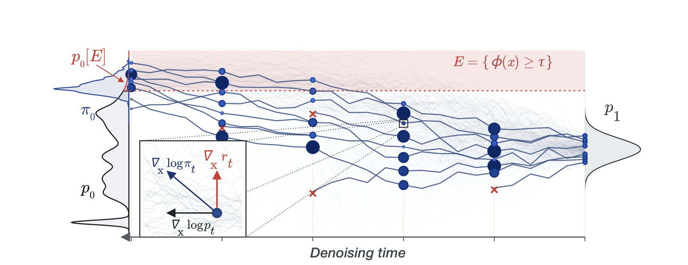
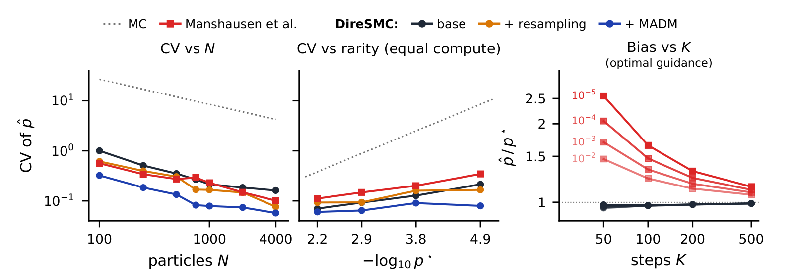
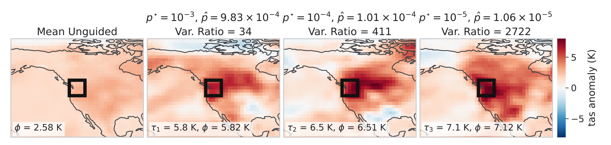
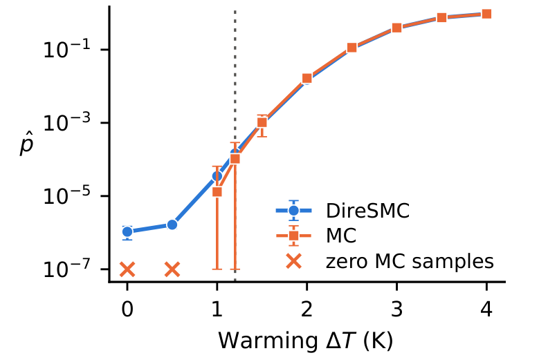

DireSMC：让扩散模型高效采到罕见事件，同时估计它的发生概率
论文原文 ↗论文：Steering Diffusion Models to Rare Events with Sequential Monte Carlo，Aavash Subedi、Tim Reichelt 等，2026。arXiv｜
科学问题需要事件样本，也需要概率
扩散模型越来越多地替代昂贵模拟器，用于天气、分子运动和材料设计。研究者常关心分布的尾部：某地区异常热且干的月份，或者某个极少出现的状态。普通蒙特卡洛按模型原来的分布不断生成，再统计命中比例；若事件概率只有十万分之一，十万个样本平均才留下一个。要稳定估计概率，样本数还需随稀有度继续增加。
定向生成可以把更多样本推入目标区域，但科学计算还要记住推了多大力度，才能恢复事件在原模型中的概率。DireSMC 将引导生成与概率修正合在同一流程里：让一群带权样本沿去噪过程向目标移动，动态保留贡献较大的轨迹，最终同时获得事件样本与经过校正的概率估计。
从随机噪声到带权事件样本
扩散模型生成数据时，从高斯噪声出发，经过多步去噪恢复出结构。网络输出的 score 是概率密度对数的梯度，指示当前状态朝哪个方向更符合模型学到的分布。这里的生成“时间”只是去噪进度。
DireSMC 使用已经训练好的 score 网络，并在推理时加上朝目标事件移动的引导。难点是事件通常以硬阈值定义，例如区域平均温度异常超过 5.813 K：阈值外记 0、阈值内记 1，无法直接提供平滑梯度。作者用高斯累积分布将这道台阶平滑化，接近目标时得分逐渐增大，再随生成推进收紧平滑宽度。这一解析松弛使用户更换区域和阈值时能够重新构造引导。
以七月高温事件为例，输入包括预训练气候模拟器、全球平均变暖量、42°—52°N 和 235°—245°E 的目标区域，以及温度阈值。模型联合生成温度、降水、相对湿度和风速四种全球月平均异常场，温度异常相对于工业化前参考气候。
第一步初始化 1,024 个“粒子”，每个粒子是一份从噪声开始生成的全球场。随后，模型在当前状态预测去噪后的场，并用高斯近似表示这份预测的不确定性。把预测分布与软事件条件结合，就得到前瞻奖励：当前这份尚有噪声的场，继续生成后有多大倾向跨过门槛。奖励梯度再与基础 score 组合，决定下一步移动方向。

原图 Fig.1。沿生成进度，粒子从噪声走向红色事件区域；点大小表示轨迹权重，红叉是重采样淘汰的粒子。左下角显示基础 score 与奖励梯度如何共同决定移动方向。
引导改变了抽样分布，因此每一步都更新权重。权重累计相邻奖励变化，以及原始去噪转移概率与引导转移概率之比。作者保持两种转移的方差相同、只改变均值，使这个高斯概率比可以直接计算。生成中已经使用的梯度和随机噪声也被用于记账，无需在终点另外重建整个高维概率密度。
权重过于集中时，序贯蒙特卡洛 SMC 进行重采样：复制高权重粒子，淘汰低权重粒子，并保留此前累计的概率尺度。触发依据是有效样本量降到粒子数一半以下；有效样本量表示这群带权粒子相当于多少份均等贡献的样本。方法也可加入短程随机移动，让复制的粒子重新分开；二维基准使用这种再生步骤，气候主实验采用引导与重采样配置。
终点再按真实门槛判断事件，并撤销软奖励带来的倾斜：
\[ \widehat p_0[E]=\frac1N\sum_{n=1}^{N}w_0^{(n)}e^{-r_0(X_0^{(n)})}\mathbf1_E(X_0^{(n)}). \]
这里 X 是生成终点，w 是累计轨迹权重，r 是软奖励，指示函数只保留真正进入事件的样本。各项合起来恢复原模型下的事件概率；将事件样本的贡献归一化，又能得到条件分布，用于观察事件发生时的空间形态。
在已知答案的分布中，检验尾部概率估计
作者先使用七组分二维高斯混合分布。它具有多个峰，跨过极端阈值后仍可能落在不同模式，因而同时考验采样覆盖和概率估计。阈值从 7 增至 10 时，解析事件概率从约 6.88×10⁻³ 降至 1.40×10⁻⁵。
在学习 score、1,000 个粒子和 1,000 步去噪的设置下，带重采样和再生的 DireSMC，在四档稀有度上的变异系数约为 0.060、0.064、0.090、0.079。变异系数衡量重复估计的标准差相对于参考概率有多大。等计算预算的概率流常微分方程方法，相应为 0.129、0.167、0.221、0.349。DireSMC 将概率修正放在随机生成轨迹上完成，在这些尾部事件中取得更稳定的估计。

原图 Fig.2。左图看增加粒子数怎样降低变异系数；中图比较事件变稀有时的估计波动；右图比较估计概率与解析参考值之比。重采样和再生帮助把计算集中到有贡献的轨迹。
气候模拟中，热与干的联合事件得到高效估计
气候实验固定全球变暖 1.5 K 和七月，用 1,024 个粒子、200 步去噪及 16 个随机种子，与大规模无引导样本形成的参考概率比较。对区域平均温度，作者设置约对应 10⁻³、10⁻⁴、10⁻⁵ 概率的三个阈值。DireSMC 能产生跨过这些门槛的全球场，并保留目标区域之外的空间结构。

原图 Fig.3。左图是基础模型的平均温度异常场；右侧为三个高温阈值下权重最高的事件样本，黑框标出目标区域。颜色显示暖异常的空间延伸及陆海差异。
更关键的比较是同时高温和低湿。温度与湿度有关联，联合事件概率需要沿两种变量的共同分布计算。作者用二维联合高斯累积分布构造前瞻奖励，并估计协方差，让引导同时考虑两者关系。
三档热干门槛的联合参考概率约为 3.14×10⁻³、2.12×10⁻⁴、1.39×10⁻⁵；DireSMC 估计与参考值的比为 0.97、0.99、1.04。计入引导自身的额外开销后，相对于普通蒙特卡洛达到相同精度，净加速分别为 9 倍、47 倍和 1,413 倍。这正对应论文的核心目标：让尾部概率计算从海量筛选转为定向带权采样。
联合估计还揭示模型中的热干关联：联合概率相对于两个边缘概率乘积的比值，从约 31 增至 212、1,384。事件越极端，共现相对于独立假设越突出。对最稀有一档，联合前瞻奖励的变异系数为 0.080，采用两个边缘奖励乘积时为 0.310，说明把相关关系纳入引导有助于稳定权重。
同一个事件，可以沿变暖背景扫描
作者固定温度异常门槛 5.81 K，再将全球平均变暖量从 0 扫描至 4 K。DireSMC 的概率估计从约 1.06×10⁻⁶ 上升到 0.951，覆盖约六个数量级。低变暖背景中，等预算的普通蒙特卡洛往往没有事件样本，而定向带权采样仍能持续计算尾部概率。

原图 Fig.4。横轴为全球平均温度异常，纵轴以对数尺度显示事件概率；蓝色为 DireSMC，橙色为等预算蒙特卡洛。橙叉表示该次抽样没有命中事件。
DireSMC 将生成模型的逐步去噪过程变成一座通向罕见区域的采样桥：解析松弛提供方向，轨迹权重恢复概率，重采样把资源转给有贡献的路径。它因此能够在同一次计算中回答“这种事件可能是什么样”以及“它在模型中多常发生”，为以扩散模型替代昂贵科学模拟器后的风险分析提供了直接工具。
原始摘要完整中文翻译
扩散模型正越来越多地被用作天气预测、分子动力学和材料设计中昂贵模拟器的替代模型。在这些模型中，计算事件 $E$ 的概率 $p_0[E]$ 很困难，尤其当所关注的事件很稀有时。使用蒙特卡洛获得稳定估计会变得在计算上不可行：为了补偿不断增加的稀有度，所需样本量按照 $1/p_0[E]$ 成比例增长。本文提出“罕见事件的扩散重要性采样”（Diffusion Importance Sampling of Rare Events），简称 DireSMC。这是一种序贯蒙特卡洛方案，能够引导一群带权样本朝罕见事件发展，从而不仅获得样本，还能获得经过校准的事件概率估计。我们利用事件集合的解析松弛来构造引导，使该方法容易扩展到多种由用户定义的罕见事件。我们在具有解析解的玩具问题和一个基于 score 的气候模拟器上验证了该方法：在 $10^{-3}$ 至 $10^{-5}$ 的稀有度范围内获得准确的罕见事件概率，相对于蒙特卡洛实现了 9 倍至 1413 倍的净加速。